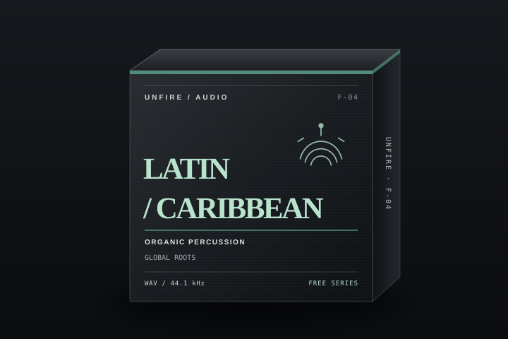

Latin & Caribbean / Global / Traditional / contemporary
Latin & Caribbean — Organic Percussion
Recorded congas, bongos, shakers, darbukas and maracas, plus two original rhythmic arrangements.

What is included
| Sound | BPM | Format | Provenance |
|---|---|---|---|
| Conga_HitN_v1_rr1_Sum | — | one-shot / recording | Source |
| Conga_HitN_v3_rr1_Sum | — | one-shot / recording | Source |
| Quinto_HitN_v2_rr1_Sum | — | one-shot / recording | Source |
| BongoH_Hit1_v1_rr1_Mid | — | one-shot / recording | Source |
| BongoH_Hit1_v2_rr1_Mid | — | one-shot / recording | Source |
| BongoL_Hit1_v1_rr1_Mid | — | one-shot / recording | Source |
| Mid_ShakerDouble_Down_rr1 | — | one-shot / recording | Source |
| Mid_ShakerDouble_Up_rr1 | — | one-shot / recording | Source |
| Mid_ShakerHighFaster_Up_rr1 | — | one-shot / recording | Source |
| Darbuka · doom_01_01 | — | one-shot / recording | Source |
| Darbuka · pa_03_01 | — | one-shot / recording | Source |
| Maracas · 01_01 | — | one-shot / recording | Source |
| Maracas · 02_01 | — | one-shot / recording | Source |
| Original 2-bar rhythm 1 | 96 | loop | Sources in manifest |
| Original 2-bar rhythm 2 | 105 | loop | Sources in manifest |
License and credits
CC0 1.0. Original source recordings remain CC0; Unfire arrangements and edits are CC0. Source information and SHA-256 checksums in the ZIP. No exclusive rights claimed. Style labels describe inspiration. Technical preview; artistic review ongoing.